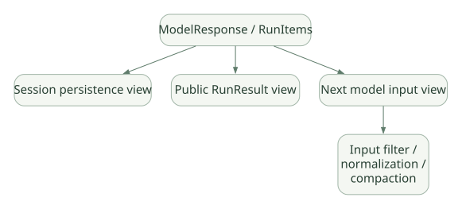

SECOND STUDY / Session·Memory·Cache
Session·Memory·Cache
이번 단원의 읽는 관점
저장 View·공개 결과·다음 모델 입력을 나누고 Session과 RunState, 압축과 캐시를 연결합니다.
살펴볼 경계session_id와 인증, 직렬화와 외부 상태 복원, 캐시 키와 실제 Hit를 구분하세요.
이 페이지의 세부 목차
Part VI. Session, RunState, Memory, 캐싱, 영속성
26. 상태를 최소 다섯 종류로 나누자#
'에이전트가 상태를 저장한다'는 말만으로는 구현을 이해할 수 없다.
| 상태 종류 | 대표 객체/형태 | 범위 | 모델이 직접 보는가? |
|---|---|---|---|
| 모델 대화 기록 | RunItem, 입력 메시지 |
현재/이전 모델 Turn | 직렬화·필터링된 부분만 |
| 앱 의존성 객체 | RunContextWrapper.context |
해당 Run 또는 주입한 공유 객체 | 자동 노출되지 않음 |
| Session | Session 구현 |
여러 사용자 Turn | 다음 Run에서 읽어 입력으로 반영될 수 있음 |
| 일시중단 복원 상태 | RunState |
승인·중단·재개 | 필요한 기록만 모델 요청으로 변환 |
| 외부 업무 상태 | DB·파일·커스텀 Memory | 영구 혹은 업무 수명 | Tool/프롬프트로 노출된 때만 |
| 관측 상태 | Trace/Span/Usage | 운영·디버깅 | 보통 모델 입력이 아님 |
질문: RunContextWrapper.context에 db_connection이 있다면 모델이 DB 연결 문자열을 보나? → 아니야. Tool이 사용하도록 주입된 Python 객체다. 단, Tool 결과나 지시문으로 연결 정보를 노출하면 그때 모델 입력에 포함될 수 있다.
27. Session은 '학습된 장기 메모리'가 아니다#
OpenAI Agents SDK의 Session은 기본적으로 이전 대화 이력 기록과 재사용에 초점이 있다. 이력을 저장한다고 해서 Agent가 자동으로 중요한 사실을 추출하고, 근거 검증하고, 영구적 지식베이스의 충돌을 해결하는 것은 아니다. [DOC: D05]
27.1 Session 인터페이스의 핵심 연산#
get_items(): 지금까지의 이력 조회.add_items(...): 새 RunItem/메시지 기록 저장.pop_item()또는 이력 수정 관련 연산: 대화 이력 수정·정리.clear_session(): 저장된 Session 항목 제거.
정확한 메서드 세부 형태는 구현체에 따라 차이가 있으므로 Session 추상 인터페이스와 구체 Session 유형을 분리해 읽어야 한다.
27.2 대표 저장 구현을 왜 여러 개 제공할까?#
| Backend | 적합 조건 | 검토할 점 |
|---|---|---|
SQLiteSession |
단일 노드/간단한 실험 | 파일 권한, 멀티프로세스, 잠금, 사용자별 접근통제 |
| Redis 기반 Session | 여러 앱 인스턴스가 이력 공유 | TTL, 네트워크, 장애 복구, 순서, 인증 |
| SQLAlchemySession | 기존 RDB와 통합 | Transaction, connection pool, schema migration |
| MongoDBSession | 문서형 운영 저장소 | 순서, Atomic sequence, 인증 |
| OpenAIConversationsSession | 원격 서버 관리형 이력 | 외부 데이터 전송과 보존 정책 |
OpenAIResponsesCompactionSession |
이력 압축이 필요한 긴 대화 | 원본 손실, 승인 상태와 충돌, Compaction 비용 |
EncryptedSession |
저장 데이터 암호화/TTL | Key 관리, 무결성·순서 검증은 별도 |
[DOC: D05] 중요: SQLiteSession의 session_id는 이력을 선택하는 식별자이지 사용자 인증 증명이 아니다. 공식 문서는 DB 파일이 신뢰되지 않거나 외부에서 변조될 경우 이를 자동 탐지하지 못할 수 있다고 경고한다. 암호화한 Session도 기록 누락·순서의 완전성을 자동 보장하지 않는다.
27.3 저장된 Session과 모델 요청 입력은 동일하지 않다#
SDK 내부는 저장용 View, 사용자에게 노출할 Run Items, 다음 모델 요청에 재사용할 View를 분리할 수 있다. Handoff Filter, Output Guardrail, 중단 승인, 모델 API에서 지원하지 않는 항목 등의 이유로 세 집합이 달라진다. [SRC: S08, S11]
가로로 이동해서 읽을 수 있습니다. 도식 크게 보기 ↗

원문의 학습용 도식입니다. 연결 방향·분기 조건·점선·쌍방향 연결을 보존해 세로로 배치했습니다. 실제 구현·의사코드·해석의 구분은 본문을 함께 읽으세요.
도식 원문 보기 (Mermaid)
flowchart LR
A[ModelResponse / RunItems] --> B[Session persistence view]
A --> C[Public RunResult view]
A --> D[Next model input view]
D --> E[Input filter / normalization / compaction]코드 추적: run_internal/session_persistence.py 및 run_internal/items.py의 prepare_model_input_items, run_items_to_input_items를 함께 읽는다. 단순히 history = all_messages로 구현하면 완료된 Tool 호출과 응답의 짝이 깨지거나, 승인 관련 Metadata가 유실되는 문제를 만들 수 있다.
28. RunState와 Session의 본질적 차이#
- Session: 여러 Run 간 대화 이력을 관리.
- RunState: 현재 Run이 어디까지 실행됐는지와 재개 시 필요한 승인·실행 문맥을 담음.
예: 데이터 수정 Tool이 승인 대기 중이면 Session에 사용자의 질문이 저장되어 있더라도, '어떤 Tool Call ID가 대기 중이고 승인 결과가 무엇인가'가 없으면 안전하게 재개하기 어렵다. 이 정보는 RunState의 영역이다. [DOC: D03, D11]
28.1 'RunState를 저장하면 그 즉시 모든 외부 상태도 복원되나?'#
아니다. RunState는 앱 프로세스가 들고 있는 모든 라이브 DB 연결, 파일 핸들, 외부 Docker 컨테이너 또는 네트워크 작업을 무조건 직렬화할 수 있는 객체가 아니다. SDK의 RunState와 개별 Sandbox Session State·Snapshot은 별개의 경계다.
28.2 승인 대기 시 상태를 어떻게 보존할까?#
실무적으로는 run_id, user_id, tenant_id, state_version, approval_id, tool_call_id, 만료시각, 승인자, 정책 버전 등을 함께 저장하는 방식을 검토한다. 이들은 SDK가 기본 제공하는 필드 전체 목록이 아닌 운영 시스템 설계 제안이다. [INF]
28.3 Resume 보안#
저장된 RunState를 사용자가 조작 가능한 입력처럼 취급하면 위험하다. 승인 상태와 Tool 인자에 직결되므로 저장 암호화/서명, 사용자/테넌트 권한 매핑, 만료 처리, 재사용 감지 등을 앱 계층에서 검토한다. '직렬화할 수 있다'는 말은 '인증 없이 누구나 재개해도 된다'는 뜻이 아니다.
29. Context History의 길이가 무한히 늘어나면?#
Session 저장 공간이 충분해도 모델의 Context Window는 유한하며, 긴 입력은 비용·지연·정확도 저하를 야기할 수 있다. 다음 선택이 필요하다.
- 최근 N개의 대화 메시지만 선택.
- 과거 Tool Output 중 재조회 가능한 항목을 버림.
- 오래된 대화를 요약/압축해 유지.
- 관련 기록만 검색해 RAG 방식으로 넣음.
- 서버 측 대화 상태(Conversation/previous response ID) 활용.
[DOC] SDK는 세션 이력 절단·압축 등의 기능을 제공하되, 도메인별 핵심 사실 선택·충돌 조정까지 자동으로 정확하게 해결해 준다고 볼 수 없다.
29.1 'RAG'의 의미를 정확히#
RAG는 검색된 외부 정보를 생성 입력에 주입하는 큰 패턴이다. 검색 저장소가 반드시 벡터 DB여야 하는 것은 아니다. Session의 최근 기록 전체를 붙이는 단순 히스토리 재사용과, 쿼리로 관련 정보를 선별하는 검색 시스템은 서로 구별한다.
29.2 Compaction의 Trade-off#
- 장점: 입력 토큰·맥락 길이 감소.
- 위험: 근거/단위/예외사항이 요약에서 빠져 오류 발생.
- 통제: 반드시 보존해야 할 중요 필드는 구조화 저장하고, 원본 인용과 출처 ID 유지.
- 승인 대기 중에는 원본 Tool Call/응답 항목과 상태를 보존해야 함. v0.24.0에서 관련 변경이 있었음.
30. Prompt Prefix Caching: 같은 내용도 매번 보내야 하는데?#
핵심: 모델 서버의 캐시는 이전 요청 Prefix의 계산 결과를 재사용하는 것이지, 네트워크 요청의 Prefix 문자열을 완전히 생략하는 기술과 동일하지 않다.
| 요소 | 캐시 효율에 미치는 영향 |
|---|---|
| 고정 instructions 앞에 배치 | 동일 접두부 재사용 가능성 증가 |
| 동일 Tool schema 순서 유지 | Tool schema가 캐시 키/요청 표현에 포함되는 Provider에 유리할 수 있음 |
| 매 Turn 날짜·랜덤 정보가 앞부분에 추가 | 그 변경 지점 이후 동일 Prefix 감소 |
| Handoff로 Agent 교체 | 새 지시문·Tool schema로 Prefix 변경 가능 |
| 세션 기록을 새 요약으로 치환 | 요약 시작 지점 이후 동일성 약화 |
| 모델·Provider 변경 | 기존 Cache 재사용이 제한될 수 있음 |
SDK에 prompt_cache_key 관련 처리가 있다는 사실과 특정 Provider에서 실제로 얼마나 절약되었는지는 서로 다른 문제다. Caching 유효성은 외부 모델 서버의 구현 계약에 의존한다. [SRC: S02; INF]